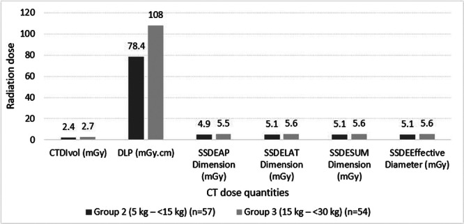
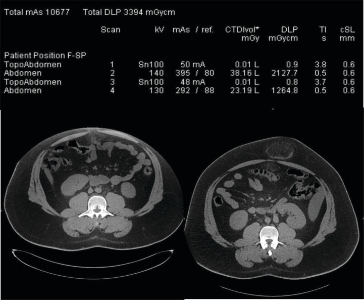
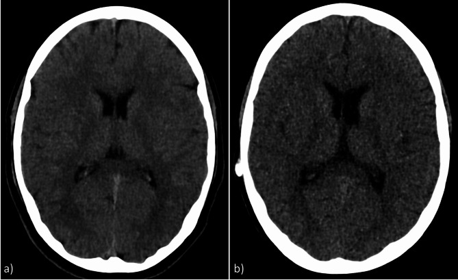
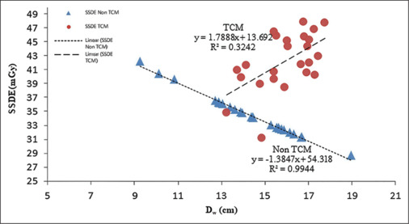

937 — Liều CT ở trẻ: SSDE thay CTDIvol, DRL nhi và theo dõi liều tích lũy / Pediatric CT dose: SSDE, pediatric DRLs and cumulative dose tracking
Tags: pattern:lieu-buc-xa-cao vung:toan-than score:SSDE score:DRL score:DLP protocol:ALARA protocol:preset-theo-can-nang protocol:DRL-audit protocol:theo-doi-lieu-tich-luy incidentaloma:khong
Mức chắc chắn (certainty): tổng hợp y văn (literature synthesis) — biên từ toàn văn các bài mở: tổng quan SSDE ở CT nhi (World J Radiol 2026, PMC13527544, CC BY-NC 4.0), DRL theo chỉ định và cân nặng cho CT bụng nhi (Health Sci Rep 2025, PMC12277105, CC BY-NC 4.0), quan hệ Dw–CTDIvol–SSDE–nhiễu trên CT sọ nhi (J Med Phys 2026, PMC13345115, CC BY-NC-ND 4.0), tối ưu liều CT sọ bằng auto prescription theo suy giảm (Sci Rep 2025, PMC12474883, CC BY-NC-ND 4.0), ca lệch tâm gây phơi nhiễm gấp > 10 lần trung vị (J Belg Soc Radiol 2025, PMC12680003, CC BY 4.0) và DLP theo tuổi ở CT sọ trẻ ≤ 5 tuổi (J Imaging 2026, PMC13514631, CC BY 4.0). Số liệu lấy từ toàn văn/bảng, không viết từ abstract gián tiếp.
Câu chốt: CTDIvol không phải liều của bệnh nhân — nó là liều đo trong một phantom acrylic 16 cm (đầu) hoặc 32 cm (thân), tức "công suất phát của máy" đã chuẩn hóa. Ở trẻ, cùng một CTDIvol nghĩa là liều mô cao hơn nhiều vì năng lượng dồn vào khối mô nhỏ hơn: SSDE (size-specific dose estimate) cao hơn CTDIvol trung vị 88% (IQR 66–112%) ở nhóm tính theo cân nặng (PMC13527544). Vì vậy câu hỏi đúng không phải "CTDIvol bao nhiêu là an toàn" mà là "SSDE của ca này là bao nhiêu, so với DRL của đúng nhóm cân nặng/tuổi, và liều tích lũy của chính đứa trẻ này đang ở đâu".
1. Tổng quan — vì sao trẻ không phải "người lớn thu nhỏ", và vì sao CTDIvol đánh lừa
1.1. Sinh học: ba lý do trẻ nhạy cảm hơn với cùng một liều
Mô đang phân bào: hệ tạo máu, tuyến giáp, vú, tuyến sinh dục, thủy tinh thể, hệ thần kinh trung ương và tủy xương là các mô nhạy nhất; ở trẻ các mô này chưa biệt hóa hoàn toàn (PMC13527544).
Cửa sổ tiềm tàng dài: ung thư do bức xạ cần nhiều thập kỷ mới biểu hiện; một đứa trẻ 1 tuổi có 70–80 năm để hiệu ứng muộn xuất hiện, trong khi người 70 tuổi gần như không có cửa sổ này.
Nhiều lần chụp trong đời: trẻ bệnh mạn (u, tim bẩm sinh, bệnh thận, đau bụng tái diễn) có thể nhận hàng chục lượt CT, nên liều thấp × rất nhiều lần ≠ ít. Đây là lý do phải theo dõi liều tích lũy theo từng bệnh nhân, không chỉ từng ca.
Bằng chứng dịch tễ — nói đúng mức: các đoàn hệ lớn (Pearce 2012 tại Anh; Mathews 2013 với 680.000 người phơi nhiễm lúc nhỏ trong liên kết dữ liệu 11 triệu người Australia; Miglioretti 2013 tại Mỹ) cho thấy hiệu ứng liên quan đến liều hấp thụ đối với bạch cầu cấp, u não và ung thư chung (PMC13527544). Đây là hiệp hội dịch tễ, không phải quan hệ nhân quả ở từng cá nhân; rủi ro tuyệt đối của một ca thường thấp, và không được dùng con số này để từ chối một chỉ định cần thiết. Kết luận thực hành: biện minh chỉ định (justification) + tối ưu liều (optimization) + ghi liều (recording).
1.2. Vật lý: CTDIvol, DLP và SSDE khác nhau ở đâu
| Đại lượng | Định nghĩa | Đơn vị | Trả lời câu hỏi gì | Không trả lời được gì |
|---|---|---|---|---|
| CTDIvol | Liều trung bình trong một lát cắt đo trên phantom chuẩn (đầu 16 cm, thân 32 cm), chia cho bước ren (pitch) | mGy | Máy đang phát ra bao nhiêu với protocol này | Liều vào bệnh nhân cụ thể; bỏ qua kích thước cơ thể |
| DLP | CTDIvol × chiều dài quét (cm) | mGy·cm | Tổng "lượng phát" của cả lần chụp | Phân bố liều theo trục z; vùng cơ thể nào nhận nhiều |
| SSDE | CTDIvol × hệ số chuyển đổi theo kích thước (AAPM TG-204 cho thân; TG-220 dùng Dw; TG-293 cho đầu) | mGy | Liều đã hiệu chỉnh theo kích thước bệnh nhân trong vùng được quét | Liều ngoài vùng quét (da, tủy xương một phần), liều cơ quan đích như thủy tinh thể/tuyến giáp |
| Liều hiệu dụng (ED) | Tổng liều cơ quan × trọng số mô (ICRP), suy từ DLP × hệ số k theo tuổi/vùng | mSv | Rủi ro ở mức quần thể, so sánh giữa các kỹ thuật | Rủi ro của cá nhân; không dùng để quyết định một ca |
- TẠI SAO CTDIvol đánh lừa ở trẻ: CTDIvol được chuẩn hóa cho phantom 32 cm (thân người lớn). Một bé 10 kg có đường kính bụng ≈ 15–18 cm — cùng một lượng photon, nhưng khối mô hấp thụ nhỏ hơn nhiều, nên liều mô thực tế cao hơn liều phantom. SSDE sửa đúng điểm này bằng hệ số lớn hơn 1 khi cơ thể nhỏ: nghiên cứu gộp cho thấy SSDE tính theo cân nặng cao hơn CTDIvol trung vị 88% (IQR 66–112%) (PMC13527544).
- TẠI SAO dùng Deff chưa đủ: Deff = trung bình nhân của AP × LAT — chỉ là hình học, không phản ánh suy giảm tia. Phổi chứa nhiều khí nên cùng kích thước hình học nhưng suy giảm ít hơn bụng. Dw (water-equivalent diameter) hiệu chỉnh theo suy giảm; so sánh trên CTA mạch vành cho thấy SSDE_Deff thấp hơn SSDE_Dw trung bình 10,08% (trung vị 18,26 vs 20,56 mGy), và khoảng cách này tăng tuyến tính theo mức chênh Deff–Dw (PMC13527544). Kết luận: không trộn Deff và Dw khi so sánh hoặc đặt DRL.
- TẠI SAO đầu phải dùng bộ hệ số riêng (TG-293): hộp sọ có xương dày, đường kính nhỏ, thủy tinh thể nằm sát trường chiếu và tư thế quét khác thân. Dùng hệ số thân (TG-204) cho đầu có thể ước lượng cao tới ~12%; vì vậy đầu phải dùng TG-293 (PMC13527544). Con số thực tế: SSDE trung vị CT sọ không cản quang theo tuổi 33,5 mGy (0–3 tháng) · 31,6 (3–12 tháng) · 36,2 (1–6 tuổi) · 57,9 (≥ 6 tuổi) — không tăng đơn điệu, vì trẻ nhỏ chụp mỏng hơn nhưng đầu dày tương đối so với phantom (PMC13527544).
- Vì sao SSDE vẫn chưa phải "liều cơ quan": SSDE chỉ tính vùng được quét. Cơ quan nằm ngoài hoặc một phần ngoài trường chiếu (da, tủy xương, bề mặt xương) có tương quan với SSDE kém hơn hẳn; với cơ quan nằm trọn trong trường chiếu, tỉ số liều cơ quan/SSDE ≈ 1,1 (0,7–1,4) cho ngực và 0,9 (0,7–1,3) cho bụng–chậu (PMC13527544). Vì vậy SSDE là điểm khởi đầu để tính liều cơ quan, không thay thế liều cơ quan.
1.3. Liều hiệu dụng tham chiếu — để không hoảng loạn và không xem nhẹ
- CT sọ một pha, liều hiệu dụng giảm mạnh theo tuổi: 4,2 mSv (sơ sinh) · 3,6 (1 tuổi) · 2,4 (5 tuổi) · 2,0 (10 tuổi) · 1,4 (15 tuổi) (PMC13527544).
- Toàn bộ CT nhi dao động < 1 mSv (protocol siêu thấp liều) đến 10–15 mSv (thân, quét dài) (PMC13527544).
- Cách dùng đúng: ED để so sánh kỹ thuật (CT thường vs siêu thấp liều) và giải thích cho gia đình, không để nói "ca này sẽ bị ung thư" hay "ca này vô hại".
2. Mẫu hình + gamut: "vì sao ca CT này có liều cao" — 7 nguyên nhân, xếp theo tần suất
Đây là gamut của liều cao, không phải gamut bệnh: khi một ca trẻ có SSDE vượt DRL, nguyên nhân gần như luôn nằm trong 7 nhóm sau, và xử lý khác nhau hoàn toàn.
- Preset người lớn / không theo cân nặng (thường gặp nhất): kV, mAs, pitch, collimation, FOV để mặc định "out of the box"; trẻ 8 kg vẫn chụp 120 kVp, 200 mAs. Dấu hiệu: CTDIvol gần như không đổi giữa các nhóm cân nặng trong cùng một phòng.
- Che phủ quá dài (scan length): quét cả bụng–chậu cho một câu hỏi chỉ ở hố chậu phải. Bằng chứng định lượng: với hệ số chiều cao 0,07, CT định hướng thấy 100% ruột thừa và giảm phơi nhiễm ~27%; hệ số 0,03 thấy 97% và giảm ~43% (PMC13527544).
- Nhiều pha / chụp lặp: 3 pha bụng cho một chỉ định không cần định tính mạch; hoặc lặp vì trẻ cử động, không hợp tác.
- Bệnh nhân lệch tâm (off-centering): bàn để quá cao/thấp làm hệ thống điều biến dòng tự động (AEC/TCM) hiểu sai kích thước → tăng mAs; đồng thời ảnh bị méo và mất chi tiết.
- TCM tắt hoặc đặt sai: không điều biến theo trục z → phần mỏng (cổ, ngực trên) nhận liều thừa; hoặc TCM quá tay ở trẻ rất nhỏ.
- Tái tạo không phù hợp: không dùng lọc lặp (IR) hoặc lọc lặp yếu, buộc phải tăng mAs để giữ nhiễu. Ngược lại, với lọc lặp mạnh, giảm liều ~58–60% vẫn giữ chất lượng ảnh tương đương (PMC13527544).
- "Liều cao giả" — do so sánh sai: so CTDIvol của protocol đầu (phantom 16 cm) với protocol thân (32 cm); so SSDE tính bằng Deff với SSDE tính bằng Dw; hoặc so hai hãng máy có cách báo cáo khác nhau.
Mnemonic để rà một ca vượt DRL — "SCOPE": Size/preset theo cân nặng · Coverage (chiều dài quét) · Off-centering · Phases (số pha/lần lặp) · Enhancement/reconstruction (kV, lọc lặp, TCM).
3. Bảng so sánh phân biệt (ma trận đối chiếu)
| Nguyên nhân liều cao (entity) | Dữ liệu/hình ảnh điển hình | Chốt vào (rule-in) | Chốt loại (rule-out) | Gợi ý xác nhận |
|---|---|---|---|---|
| Preset người lớn | Ảnh ít nhiễu "đẹp" bất thường ở trẻ nhỏ; CTDIvol không giảm khi cân nặng giảm | CTDIvol/SSDE bằng nhau giữa nhóm 10 kg và 50 kg trong cùng phòng | SSDE giảm rõ theo nhóm cân nặng → preset đã đúng | So 20 ca/nhóm cân nặng; xem kV/mAs/pitch trên báo cáo liều |
| Che phủ quá dài | Trường quét vượt vùng giải phẫu cần (đầu–cổ–ngực cho câu hỏi bụng) | DLP lớn trong khi CTDIvol bình thường | DLP cao kèm CTDIvol cao → nguyên nhân khác | Đo chiều dài quét trên topogram; đối chiếu chỉ định |
| Nhiều pha / chụp lặp | 2–3 chuỗi cùng vùng, hoặc 2 lần cùng protocol trong một buổi | Tổng DLP ≈ số pha × DLP một pha | Chỉ 1 chuỗi, DLP vẫn cao → do kV/mAs | Đếm series trong báo cáo liều; hỏi lý do lặp |
| Lệch tâm bệnh nhân | Bệnh nhân không nằm giữa vòng gantry trên ảnh scout/axial; ảnh méo, mất mô ngoại vi | Tổng DLP gấp > 10 lần trung vị cùng chỉ định + ảnh không chẩn đoán được | Tâm hóa đúng + ảnh đủ chẩn đoán → không phải nguyên nhân | Đo khoảng cách bệnh nhân–tâm vòng quét; kiểm tra lại sau khi tâm hóa |
| TCM tắt/sai | Nhiễu không đều theo trục z; vùng mỏng (cổ) nhiễu thấp bất thường | Nhiễu ở cổ thấp hơn hẳn ở bụng dù cổ nhỏ hơn | Nhiễu đồng đều theo vùng → TCM hoạt động đúng | Đối chiếu CTDIvol từng lát với Dw từng lát |
| Thiếu lọc lặp | Ảnh nhiễu ở mức liều thấp; phải tăng mAs để "cho đẹp" | Cùng liều, nhiễu cao hơn hẳn so với protocol có IR/DLIR | Nhiễu thấp dù liều thấp → đã có lọc lặp mạnh | So ảnh cùng kV/mAs, khác thuật toán tái tạo |
| So sánh sai (liều cao giả) | Số liệu "ca này cao gấp đôi" nhưng khác phantom/kích thước/metric | Khác phantom 16 vs 32 cm, hoặc Deff vs Dw, hoặc CTDIvol vs SSDE | Cùng phantom, cùng metric, cùng nhóm kích thước → so sánh hợp lệ | Ghi rõ phantom và metric trước khi so |

Hai nhóm cân nặng 5–< 15 kg (n = 57) và 15–< 30 kg (n = 54) trong nghiên cứu DRL cho CT bụng có cản quang ở trẻ có u nguyên bào thận: CTDIvol 2,4 → 2,7 mGy, DLP 78,4 → 108 mGy·cm, nhưng SSDE 4,9–5,6 mGy — luôn cao hơn CTDIvol vì đã hiệu chỉnh kích thước. Đây là lý do DRL phải đặt trên SSDE, không chỉ CTDIvol. Nguồn: Health Sci Rep 2025 (PMC12277105), CC BY-NC 4.0; dùng nguyên bản.3.1. Đọc báo cáo liều đúng thứ tự (5 bước)
- Xác định phantom: "Body 32" hay "Head 16" — quyết định không được so với protocol khác phantom.
- Đọc CTDIvol của từng series, không đọc số tổng của cả exam (số tổng dễ bị một series lỗi chi phối).
- Tính/ghi SSDE: dùng Deff hoặc Dw nhất quán, và TG-293 cho đầu.
- DLP = CTDIvol × chiều dài, kiểm tra chiều dài có khớp vùng chỉ định.
- Đối chiếu DRL của đúng nhóm tuổi/cân nặng, rồi mới kết luận "ca này cao".
4. Protocol + hệ phân độ: preset theo cân nặng, DRL nhi và theo dõi liều tích lũy
4.1. Protocol tối thiểu cho một ca CT nhi
- Chọn preset theo cân nặng (dải thường dùng: 5 · 15 · 30 · 50 · 80 kg), không theo tuổi đơn thuần; trong mỗi dải chia tiếp theo vùng (đầu, ngực, bụng).
- kV thấp khi được: 70–80 kVp cho ngực/bụng trẻ nhỏ có cản quang; tự chọn kV theo suy giảm (auto prescription) cho kết quả tốt hơn preset theo tuổi: nghiên cứu 147 trẻ cho thấy giảm liều 48,2% ở nhóm 0–1 tuổi và 40,4% ở nhóm 10–15 tuổi, chất lượng ảnh chủ quan không kém (PMC12474883).
- TCM bật, pitch đủ thấp để không bỏ sót (pitch cao + bàn nhanh = khoảng trống), collimation hẹp, FOV vừa đủ.
- Chiều dài quét = vùng giải phẫu cần, không "quét cho chắc".
- Lọc lặp (IR/DLIR): dùng mức phù hợp; đây là "van" cho phép giảm liều mà không tăng nhiễu.
- Báo cáo liều bắt buộc có CTDIvol, DLP, SSDE (hoặc phần mềm tự tính từ ảnh), lưu vào PACS/hệ thống quản lý liều DACS.
4.2. DRL: định nghĩa và ngưỡng (ICRP 135)
- Giá trị điển hình (typical value) = trung vị phân bố liều của một cơ sở cho một loại thủ thuật × một nhóm tuổi/cân nặng.
- DRL = bách phân vị 75 của phân bố trung vị từng cơ sở (không phải 75th percentile của toàn bộ ca bệnh nhân).
- Cỡ mẫu tối thiểu 20 bệnh nhân mỗi nhóm (10 nếu thủ thuật hiếm).
- Vượt DRL không phải "sai" mà là tín hiệu phải rà soát quy trình (SCOPE); ngược lại, luôn dưới DRL cũng không chứng minh ảnh đủ chẩn đoán — phải gắn với chất lượng ảnh/nhiễu.
- DRL phải chia theo cân nặng/kích thước, không theo tên "CT bụng": bảng dưới là ví dụ công bố.
| Nhóm | CTDIvol (mGy) | DLP (mGy·cm) | SSDE (mGy) | Nguồn |
|---|---|---|---|---|
| Bụng–chậu, 5 kg | 1,4 | — | 4,1 (Deff < 13 cm) | PMC13527544 |
| Bụng–chậu, 15 kg | 2,2 | — | 5,0 (14–16 cm) | PMC13527544 |
| Bụng–chậu, 30 kg | 2,7 | — | 5,7 (17–20 cm) | PMC13527544 |
| Bụng–chậu, 50 kg | 4,0 | — | 7,1 (21–24 cm) | PMC13527544 |
| Bụng–chậu, 80 kg | 4,7 | — | 7,2 (> 24 cm) | PMC13527544 |
| CT bụng có cản quang, u nguyên bào thận, 5–< 15 kg | 2,4 | 78,4 | 4,9–5,6 | PMC12277105 |
| CT bụng có cản quang, u nguyên bào thận, 15–< 30 kg | 2,7 | 108 | 4,9–5,6 | PMC12277105 |
| CT sọ, ≤ 1 tuổi | 28,6 | 545,8 | — | PMC13527544 (dẫn Kamdem) |
| CT sọ, 1–5 tuổi | 32,6 | 735,0 | — | PMC13527544 |
| CT sọ, 5–10 tuổi | 37,1 | 761,6 | — | PMC13527544 |
| CT sọ, 10–15 tuổi | 44,2 | 1.081,2 | — | PMC13527544 |
Lưu ý cách đọc bảng: các hàng bụng–chậu lấy CTDIvol DRL theo nhóm cân nặng và SSDE DRL theo nhóm Deff từ cùng một tổng quan — đây là hai phân bố khác nhau, không phải cặp số của cùng một nhóm bệnh nhân; không nhân/chia chéo giữa hai cột.
Phản biện quan trọng: nghiên cứu DRL cho CT bụng nhi ở Nam Phi (PMC12277105) đặt DRL bằng trung vị phân bố, không phải bách phân vị 75 như ICRP 135; vì vậy con số của họ thấp hơn DRL châu Âu và không tương đương về phương pháp. Khi trích dẫn, phải ghi rõ "DRL theo trung vị" — nếu không sẽ so sai giữa các trung tâm.
4.3. Luồng quyết định (flowchart)
flowchart TD
A[Chỉ định CT ở trẻ] --> B{Thay được bằng siêu âm hoặc MRI không xạ?}
B -->|Có| C[Chọn phương thức không bức xạ]
B -->|Không| D[Preset theo cân nặng và vùng cơ thể]
D --> E[Quét đúng chiều dài, tâm hóa bệnh nhân, TCM bật]
E --> F[Ghi CTDIvol, DLP, SSDE vào báo cáo liều]
F --> G{SSDE vượt DRL của nhóm cân nặng?}
G -->|Không| H[Lưu hồ sơ liều và cộng dồn theo bệnh nhân]
G -->|Có| I[Rà theo SCOPE: size, coverage, off-centering, phases, reconstruction]
I --> J[Kiểm toán lại tối thiểu 20 ca mỗi nhóm]
J --> H
4.4. Theo dõi liều tích lũy — ba điều đúng, ba điều sai
- Đúng: theo dõi theo từng bệnh nhân, gắn với chỉ định và vùng cơ thể; dùng hệ thống quản lý liều (DACS) để tự động thu thập, phát hiện ca bất thường và cảnh báo liều khi vượt ngưỡng nội bộ.
- Đúng: với trẻ chụp lặp lại (u, tim bẩm sinh, bệnh mạn), cộng dồn theo vùng cơ thể và theo thời gian, không cộng thô mọi lần chụp.
- Đúng: dùng liều tích lũy để mở cuộc trao đổi với lâm sàng (có thể thay bằng MRI/siêu âm lần sau), không để tự động từ chối chỉ định.
- Sai: cộng CTDIvol hoặc SSDE của các lần chụp — mỗi lần có chiều dài quét, tâm quét, TCM khác nhau, nên tổng số học không phải liều tích lũy thật. Phải dùng prôfin liều theo trục z hoặc mô hình liều cơ quan (PMC13527544).
- Sai: coi "tổng DLP" của một exam là liều của bệnh nhân — DLP vẫn là đại lượng phantom.
- Sai: đặt một ngưỡng "an toàn tuyệt đối" cho liều tích lũy — hiện không có ngưỡng được thống nhất; mọi ngưỡng cảnh báo là công cụ quản lý chất lượng nội bộ.
5. Biến thể bình thường và cạm bẫy
- Cạm bẫy 1 — lệch tâm (off-centering). Ca nguyên văn: bệnh nhân 24 tuổi, hai lần chụp bụng–chậu, tổng DLP 3.394 mGy·cm ≈ 51 mSv, gấp hơn 10 lần trung vị của cơ sở cho cùng chỉ định; nguyên nhân là bàn để quá cao làm AEC hiểu sai kích thước, ảnh không chẩn đoán được thoát vị rốn; lần chụp lại đúng tâm có CTDIvol thấp hơn 40% nhưng thấy rõ thoát vị (PMC12680003). Bài học kép: liều cao hơn không đồng nghĩa ảnh tốt hơn, và CTDIvol thấp hơn ở lần sau không chứng minh lần trước "nhẹ" — nó chỉ phản ánh AEC bị đánh lừa.

Trên: báo cáo liều với tổng mAs 10.677, tổng DLP 3.394 mGy·cm, hai chuỗi bụng 38,16 mGy/2.127,7 mGy·cm và 23,19 mGy/1.264,8 mGy·cm. Dưới: trái — bệnh nhân lệch tâm, không thấy thoát vị rốn; phải — đúng tâm, thoát vị rốn hiện rõ. Nguồn: J Belg Soc Radiol 2025 (PMC12680003), CC BY 4.0; dùng nguyên bản.- Cạm bẫy 2 — so CTDIvol giữa hai phantom. CTDIvol của đầu (16 cm) và thân (32 cm) không cùng thang: phantom nhỏ hơn nhận liều cao hơn cho cùng kV/mAs. Một protocol đầu "40 mGy" không đáng sợ hơn protocol bụng "10 mGy" nếu không quy về cùng đại lượng và cùng mô.
- Cạm bẫy 3 — Deff ≠ Dw. Chênh ~10% trên CTA mạch vành, và tăng khi cơ thể càng không đồng nhất (ngực nhiều khí, bụng nhiều mỡ). Ghi rõ dùng metric nào; không đổi metric giữa các lần khi so xu hướng.
- Cạm bẫy 4 — "liều thấp" mà ảnh không đủ. Giảm liều 58–60% chỉ khả thi khi tăng lọc lặp; nếu hạ mAs mà giữ lọc cũ, ảnh mất phân biệt xám–trắng và phải chụp lại — tổng liều tăng chứ không giảm. Luôn báo cáo liều kèm nhiễu/điểm chất lượng ảnh.
- Cạm bẫy 5 — đầu ≠ thân. Không dùng hệ số TG-204 cho đầu (sai tới ~12%); SSDE đầu không thay thế liều thủy tinh thể/tuyến giáp (hai cơ quan này nằm ngoài hoặc sát trường chiếu).
- Cạm bẫy 6 — bỏ sót liều "ẩn". Topogram/scout, chuỗi định vị, chuỗi lặp sau cử động, và over-ranging (quét vượt hai đầu) thường không được cộng vào con số người đọc nhớ. Trong ca lệch tâm ở trên, tổng mAs 10.677 mới là con số thật, không phải CTDIvol của một chuỗi.
- Cạm bẫy 7 — "trẻ 15 tuổi = người lớn". Tuổi sinh học không bằng kích thước: bé 15 tuổi 35 kg khác người lớn 70 kg; luôn chọn preset theo cân nặng/kích thước, không theo tuổi trên giấy tờ.
6. Tự lượng giá — Blind Quiz
Ca 1 — Báo cáo liều của một ca CT bụng–chậu, hai lát cắt cùng độ cao. Nhìn số trước, đừng đoán bệnh.
- Bối cảnh: người lớn trẻ, đau bụng, chụp lại vì lần đầu "không thấy gì".
- Câu hỏi: (1) Tổng DLP là bao nhiêu, gấp khoảng mấy lần trung vị? (2) Vì sao lần chụp thứ hai có CTDIvol thấp hơn 40% mà ảnh lại chẩn đoán được? (3) Ba việc phải làm ngay.
Bấm để hiện đáp án (findings + chẩn đoán)
- Findings: tổng DLP 3.394 mGy·cm ≈ 51 mSv, > 10 lần trung vị cùng chỉ định; hai chuỗi bụng 38,16 và 23,19 mGy; ảnh trái lệch tâm (bàn quá cao) → không thấy thoát vị rốn; ảnh phải đúng tâm → thoát vị rốn rõ.
- Chẩn đoán: phơi nhiễm quá mức do lệch tâm bệnh nhân, không phải do protocol nặng hơn. AEC đọc scout sai kích thước → tăng mAs; khi tâm hóa lại, AEC đọc đúng nên CTDIvol giảm 40% mà ảnh vẫn đủ.
- Việc phải làm: (1) tâm hóa bệnh nhân ở tâm vòng quay trước mọi chuỗi; (2) đặt cảnh báo DLP trên DACS và rà các ca > 10× trung vị; (3) không chấp nhận ảnh không chẩn đoán — chụp lại đúng tâm rẻ hơn nhiều so với chụp lại mù.
- Nguồn: J Belg Soc Radiol 2025 (PMC12680003), CC BY 4.0.
Ca 2 — Hai bé tuổi gần bằng nhau, cùng chụp sọ không cản quang; hai ảnh chất lượng "na ná". Ảnh nào tiết kiệm liều hơn, và vì sao?

- Bối cảnh: (a) bé gái 16,5 tuổi, protocol theo tuổi; (b) bé trai 16,8 tuổi, protocol tự chọn kV/mAs theo suy giảm từ scout.
- Câu hỏi: đọc CTDIvol, DLP, SSDE, ED của hai bên; chất lượng ảnh khác nhau thế nào; kết luận về "preset theo tuổi".
Bấm để hiện đáp án
- (a) theo tuổi: CTDIvol 34,4 mGy, DLP 550,28 mGy·cm, SSDE 33,02 mGy, ED 1,49 mSv, điểm chất lượng 3,2.
- (b) auto prescription: CTDIvol 19,93 mGy, DLP 311,50 mGy·cm, SSDE 19,27 mGy, ED 0,84 mSv, điểm chất lượng 3,0.
- Kết luận: giảm ~42% CTDIvol, ~43% DLP, ~42% SSDE, ~44% ED, chất lượng ảnh không kém có ý nghĩa (3,0 vs 3,2; tất cả tiêu chí chủ quan p < 0,05 không thua). Trên toàn bộ 147 trẻ, mức giảm lớn nhất ở 0–1 tuổi (48,2%) và 10–15 tuổi (40,4%).
- Bài học: tuổi là biến thay thế tồi cho kích thước/suy giảm; hai trẻ cùng 16 tuổi có thể khác nhau 20 kg. Preset theo suy giảm đo từ scout phân bố liều đồng đều hơn và hạ liều ở cả hai đầu tuổi.
- Nguồn: Sci Rep 2025 (PMC12474883), CC BY-NC-ND 4.0 — ảnh dùng nguyên bản, không cắt/ghép.
Ca 3 — Biểu đồ SSDE theo Dw: cùng một đầu, hai kiểu điều biến dòng. Đường nào là TCM bật?

- Bối cảnh: 50 trẻ 0–14 tuổi, CT sọ không cản quang, 120 kVp; 25 ca TCM bật, 25 ca dòng cố định.
- Câu hỏi: (1) Đường nào có hệ số góc âm, đường nào dương? (2) Vì sao bật TCM lại làm SSDE tăng theo Dw? (3) Nêu 2 hệ quả khi so SSDE giữa hai trung tâm.
Bấm để hiện đáp án
- Đường dòng cố định (Non-TCM, tam giác xanh): y = −1,3847x + 54,318, R² = 0,994 — SSDE giảm khi Dw tăng, vì CTDIvol không đổi còn hệ số chuyển đổi giảm khi đầu to hơn.
- Đường TCM bật (chấm đỏ): y = +1,7888x + 13,692, R² = 0,324 — SSDE tăng theo Dw. Cơ chế hợp lý: TCM tăng mAs cho phần cơ thể dày hơn, nên CTDIvol không còn hằng số; khi mức tăng CTDIvol lớn hơn mức giảm của hệ số chuyển đổi, SSDE tăng. R² chỉ 0,324 cho thấy quan hệ mất tính tuyến tính (tán xạ, vị trí đo, khác biệt giải phẫu).
- Số liệu nhóm (theo bài): TCM bật giảm CTDIvol 38,5 ± 7,1 → 32,8 ± 6,4 mGy (−15,4%, p = 0,021), SSDE 39,2 ± 6,1 → 29,6 ± 5,3 mGy (−24,5%, p < 0,001), nhiễu 10,2 ± 2,3 → 8,6 ± 1,9 HU (p = 0,037).
- Phản biện (quan trọng): số trung bình nhóm nói TCM giảm SSDE, nhưng biểu đồ lại cho thấy các điểm TCM nằm cao hơn dòng cố định ở cùng Dw. Hai cách trình bày không khớp nhau — có thể do hai nhóm khác nhau về kích thước đầu hoặc do cách tính SSDE từng lát. Vì vậy không được đọc biểu đồ này như "TCM làm tăng liều"; chỉ nên đọc như bằng chứng rằng quan hệ Dw–SSDE phụ thuộc trạng thái TCM và thành phần nhóm, tức SSDE không phải đại lượng so sánh được nếu khác điều kiện đo.
- Hệ quả: (1) SSDE chỉ so được khi cùng trạng thái TCM và cùng cách tính Dw/Deff; (2) một trung tâm bật TCM có thể báo SSDE khác trung tâm tắt TCM dù liều cơ quan tương đương — đừng kết luận "trung tâm kia tệ hơn" từ một con số.
- Nguồn: J Med Phys 2026 (PMC13345115), CC BY-NC-ND 4.0 — ảnh dùng nguyên bản, không cắt/ghép.
Bài liên quan chéo
- 932 – An toàn bức xạ trong can thiệp dưới CT/DSA: liều, che chắn & ngưỡng cảnh báo da (cùng vật lý liều, khác đối tượng: nhân viên & da bệnh nhân)
- 935 – Tối ưu liều can thiệp NHI: DRL theo cân nặng, preset, DAP (DRL nhi nhưng cho fluoroscopy, không phải CT)
- 600 – Tổng quan Hệ Nhi khoa (ALARA và các trục đọc phim nhi)
- 605 – Siêu âm phổi có điểm (LUS) ở sơ sinh (thay thế X-quang/CT khi được)
- 936 – Phản ứng da muộn nặng sau thuốc cản quang (an toàn thuốc cản quang — mặt còn lại của "an toàn trong CT")
Không dùng để chẩn đoán độc lập khi chưa có người hướng dẫn.